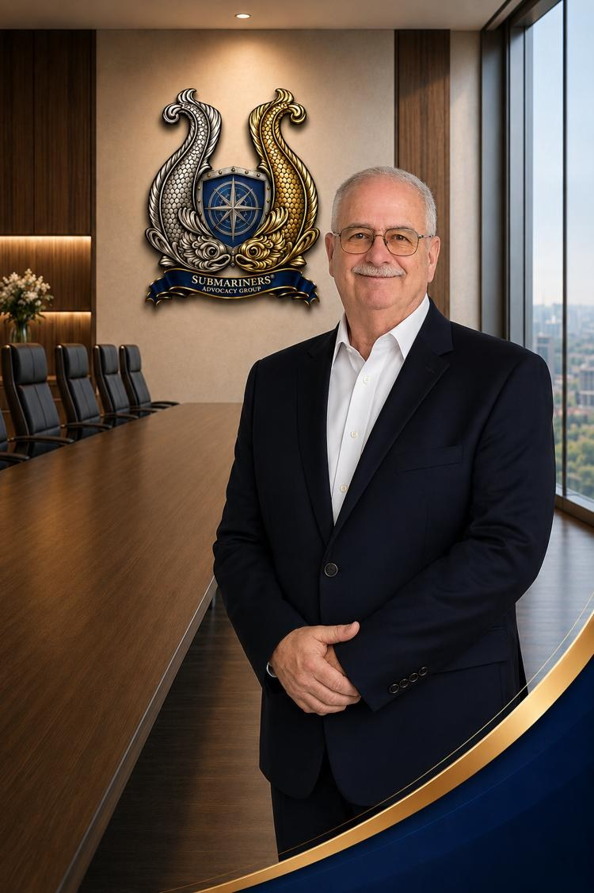

Board Member
Patrick Ivory
Patrick Ivory serves in a leadership role within the Submariners’ Advocacy Group (SAG), supporting the organization’s mission to advocate for U.S. Navy Submariners, veterans, and their families. A proud member of the Silent Service community, Patrick brings decades of submarine experience, operational leadership, and continued dedication to supporting those who have served beneath the sea.
Throughout his naval career, Patrick served aboard multiple U.S. Navy submarines, gaining firsthand experience in the demanding operational environment, discipline, and unique brotherhood associated with undersea warfare. His service within the Submarine Force provided extensive leadership experience while reinforcing the values of accountability, professionalism, teamwork, and mission accomplishment that continue to guide his work today.
Over the course of his distinguished submarine career, Patrick supported critical operational missions and contributed to the readiness and effectiveness of the crews and commands with which he served. His experiences in the Silent Service established a lifelong commitment to supporting fellow Submariners and advocating for the recognition and support they deserve long after their military service concludes.
Following his military career, Patrick continued to build upon his leadership and professional experience through work focused on operational support, organizational collaboration, and community engagement. His ability to connect with others, remain mission-focused, and support organizational growth has made him a valued contributor within both professional and veteran-service environments.
Within SAG, Patrick supports initiatives designed to strengthen advocacy efforts, expand organizational outreach, and increase awareness surrounding the long-term impacts associated with submarine service. His commitment to service reflects SAG’s core values of integrity, professionalism, and dedication to the Silent Service community.
Patrick remains committed to ensuring that current and former Submariners, as well as their families, continue to receive meaningful advocacy, support, and recognition for their sacrifices and contributions to national defense.